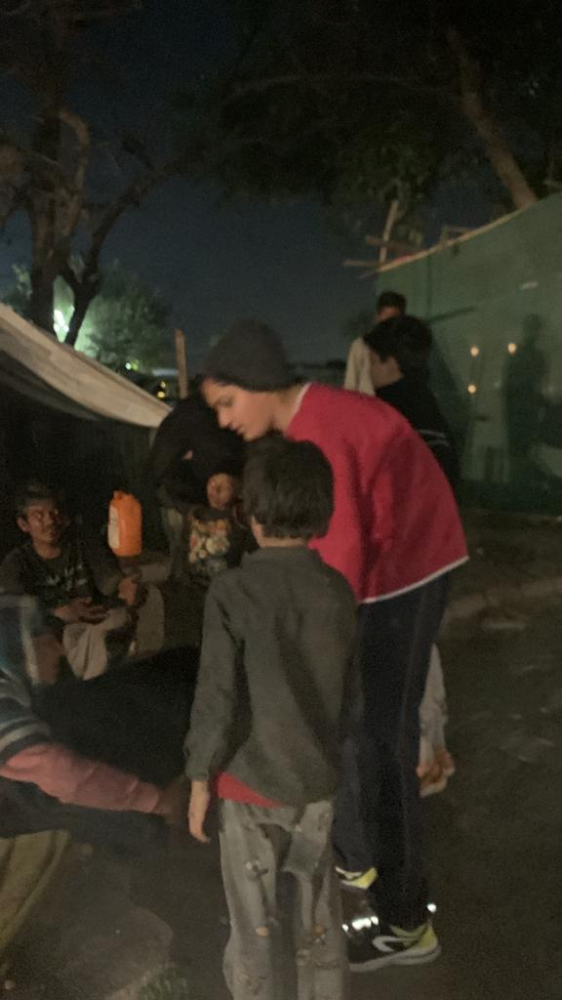

The Shivohum Foundations is committed to giving homeless people a safe and respectable place to live, and it works to end homelessness by fostering compassion and community support. The organization supports empowering people via education, acknowledging shelter as a basic human right, and treating every person with respect and dignity.
